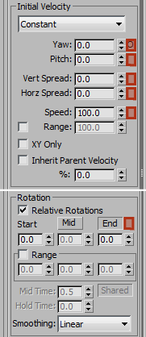

Appendix: Particle Property Overlays
The SC2Particles and SC2Ribbons have a unique feature for some parameters, Property Overlays. In general SC2Particles have a simple random range for most values. Property Overlays are a way to add more unique animation ability quickly to these kinds of effects. This will alter the property at particle creation time with a procedural offset value, and will remain constant for the life of each particle. The value is controllable with a simple set of curve types as well as animatable values for amplitude, and frequency.
SC2Particle Properties that allow Overlays
Next to some of the SC2Particles properties is a small UI button that is blank by default. If there is an overlay applied the box will show an O on the button.
Yaw Overlay will give a procedural offset to the initial particle direction in the local X axis.
Pitch Overlay will give a procedural offset to the initial particle direction in the local Y axis.
Vert Spread Overlay will give a procedural offset to the random range of the particle initial direction of travel on the Vertical axis.
Horz Spread Overlay will give a procedural offset to the random range of the particle initial direction of travel on the Horizontal axis.
Speed Overlay will give a procedural offset to the initial Speed of particles.
Alpha Overlay will add an offset to the particle alpha values.
Rotation Overlay adds an offset to the particle rotation. The amplitude value is in radians and not degrees.
Size Overlay adds an offset to the particle scale.
SC2Particle Property Overlay Pop-Up
By clicking the overlay button, a Pop-up window will appear where you can modify the values for the Property Overlay.

Curve Type: is a pulldown to select the animation curve type.
None default and no Overlay applied. To clear an Overlay, set it to None.
Sin applies a smooth Sine Wave animation offset.
Cos applies a smooth Cosine Wave animation offset.
Saw Tooth applies a linear offset that starts at negative amplitude and increase to positive amplitude over one frequency cycle and then starts again at negative amplitude.
Square Wave offset alternates between negative and positive amplitude.
Random Noise picks a random value from negative amplitude to positive amplitude.
Continuous Noise is a moving random value that will be a similar offset to particles created before and after that moment in time. The nature of this moving average noise type, is that amplitude values need to be 2 to 4 times larger than other Curve Types.
Amplitude: is the offset value to be applied. An Amplitude value of 1 will yield a value from -1 to +1 that will be added to the particle property at the moment of creation.
K is the active Key frame button. These buttons will show red when the Amplitude or Frequency has an active key frame at the current time. Click to add or remove a key frame from the current time.
Frequency: is the number of cycles per second. The smaller the number, the slower the offset cycling.